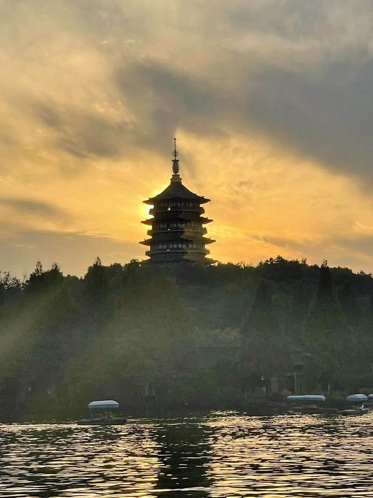
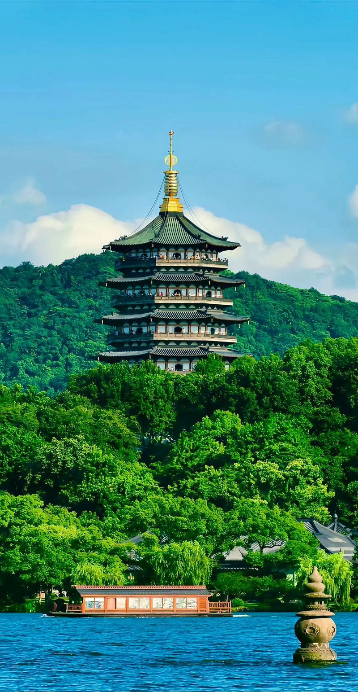
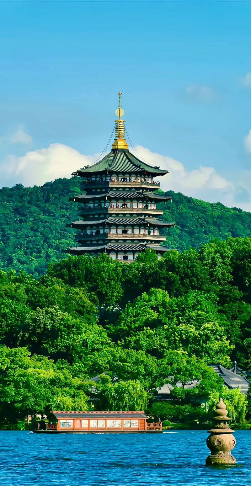
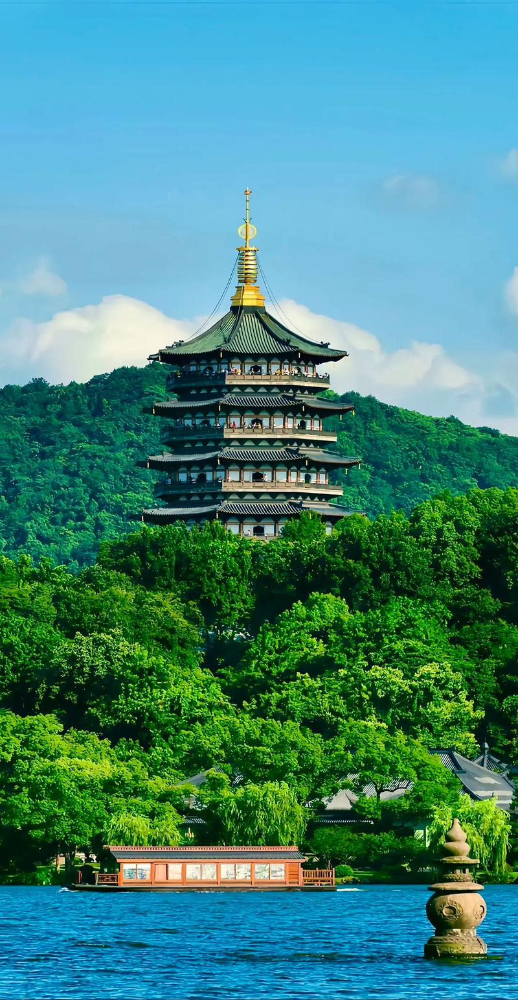

雷峰夕照
雷峰夕照是西湖十景中最富传奇色彩的景观，位于西湖南岸的夕照山上，因民间故事《白蛇传》而闻名于世。雷峰塔始建于五代吴越国时期(977年)，是吴越国王钱俶为祈求国泰民安而建。原塔于1924年倒塌，现存雷峰塔为2002年重建。
雷峰塔为八角形楼阁式塔，通高71.679米，由台基、塔身和塔刹三部分组成。台基高9.8米，塔身高45.8米，塔刹高16.1米。塔身采用钢结构，外饰铜瓦，整体造型古朴典雅，既保留了传统塔的建筑风格，又融入了现代建筑技术。
观赏雷峰夕照的最佳时间是傍晚日落时分。当夕阳西下，余晖洒在雷峰塔上，塔身呈现出金黄色的光辉，与西湖的碧水、远山的青黛形成鲜明的对比，构成了一幅壮丽的画面。此时站在湖对岸的北山街或白堤上观赏，景色最为迷人。
雷峰塔不仅是一处景观，更承载着丰富的文化内涵。它是《白蛇传》中白娘子被法海镇压的地方，这个凄美的爱情故事为雷峰塔增添了神秘的色彩。历代文人墨客在此留下了许多诗词佳作，如"雷峰夕照"的诗句等。
现在的雷峰塔内设有电梯，游客可以直达塔顶，俯瞰西湖全景。塔内还陈列着原雷峰塔的遗址和出土文物，包括佛经、佛像、舍利子等珍贵文物，是了解雷峰塔历史和文化的好去处。

 

